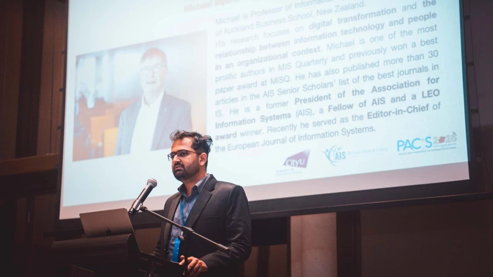

Workshops · Speakers · Competitions
Chapter Events
What’s coming up at the chapter, and moments from the wider AIS community.
Upcoming Events
Full calendar

What to expect
Four ways to show up
- 01Technical workshops
Hands-on sessions in SQL, Python, cloud and data visualisation. Bring a laptop.
- 02Industry speakers
Professionals share how they got where they are, and what they look for in candidates.
- 03Case competitions
Team up, solve a real business problem, and present to judges from industry.
- 04Socials
Mixers, game nights and outings. The easiest way to meet the rest of the chapter.

Compete on a national stage
As a chapter of the global Association for Information Systems, our members can take part in the AIS Student Chapter Leadership Conference, where teams from universities across the country go head to head in case and technology competitions.
It’s the best way to test what you’ve learned against the strongest IS students in the country, and to come home with connections that last well beyond the weekend.
About AIS nationalMoments from the AIS community
 Awards & recognition
Awards & recognition
 Socials & receptions
Socials & receptions
 Celebrating milestones
Speaker series
Celebrating milestones
Speaker series
Event photos: AIS IS History photo gallery
Stay in the loop
Never miss an event
Join the email list and we’ll let you know when something’s coming up.
Join the email list